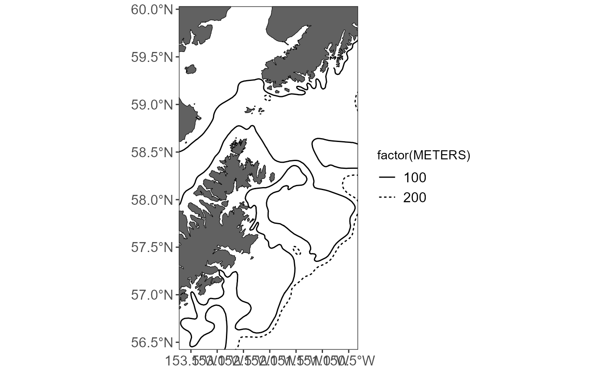

Set your ggplot map limits a bit more easily
easy_plot_limits.RdReturns a ggplot2 object that will limit the extent of your ggplot map to cover only the data you care about. This will be slightly larger than the extent of plot_limits_data; you can still use the param `plot_expansion` to fine-tune the plot extent.
Arguments
- plot_limits_data
A
sfspatial dataframe; this is required and used to map extent. Use the same dataframe as you used forget_basemap_layers!- plot_expansion
This controls the amount of buffer around the basemap (default is 5% (0.05) around the extent of the data; set from 0-1). This should match the value used for
get_basemap_layers.
Examples
library(ggplot2)
library(dplyr)
#>
#> Attaching package: 'dplyr'
#> The following objects are masked from 'package:stats':
#>
#> filter, lag
#> The following objects are masked from 'package:base':
#>
#> intersect, setdiff, setequal, union
library(sf)
library(MACEReports)
# get some example data
dat <- data.frame(
"x" = c(-151.2, -150.3, -153.4),
"y" = c(58.2, 59.8, 56.6),
"z" = c(7500, 40000, 28000),
"species" = c("a", "a", "b"))
# create an sf dataframe
dat <- sf::st_as_sf(dat, coords = c("x", "y"), crs = 4326)
# convert CRS to a reasonable projection
dat <- sf::st_transform(dat, crs = "EPSG:3338")
# return a basemap
basemap <- get_basemap_layers(plot_limits_data = dat, bathy = FALSE)
# get the bathymetry
bathy_data <- get_shapefile(shapefile_name = "alaska_bathy_contours") %>%
filter(METERS %in% c(100,200))
# plot it
basemap +
geom_sf(data = bathy_data, aes(linetype = factor(METERS))) +
easy_plot_limits(plot_limits_data = dat)
